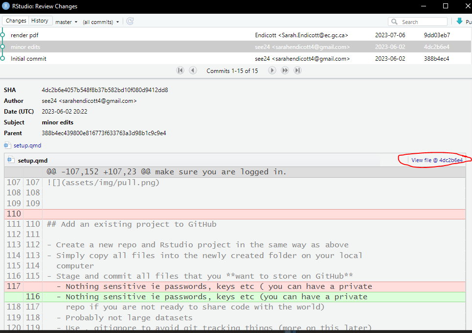

3 Intermediate Git
3.1 Time travel
One of the key benefits of using version control is the ability to go backwards and see what a project looked like at a previous time point.
3.1.1 Individual files
As mentioned in the previous chapter you can see the changes to a file using the History or Blame buttons on GitHub. You can also view the History of your repo in RStudio by clicking “History” in the Git Pane. This will show you a Window with all your commits and you can select one to see what it changed. You can also click “View file @ SHA” to see the full file at that point in history, which you can then save or run as you see fit.

3.1.2 Whole repository
You can also look at the whole repository at a previous time point. On GitHub on the Commits page you can click the “<>” button to browse the repository at that point in the commit history. 
On your local computer you can change the files back to how they were at a particular point in history using the git checkout command. This is the same command used to switch branches. You can use a specific commit name or move a certain number of commits back from the current status (HEAD).
If you try to do this with uncommited changes you will get an error saying you must first commit your changes.
Example commands:
git switch -d HEAD^: go to previous commitgit switch -d HEAD~3: go back three commitsgit switch -d 4959f4d: go to the commit with the id “4959f4d”
When do this you are in ‘detached HEAD’ state (-d is short for –detach). You can look around, make experimental changes and commit them, and you can discard any commits you make in this state without impacting any branches by switching back to a branch.
If you want to create a new branch to retain commits you create, you may do so (now or later) by using -c with the switch command. Example:
git switch -c <new-branch-name>
When you are done you can go back to the most recent commit on the master branch (or other branch) with git switch master.
Note: switch is a newer git command so you will see older help docs and such use checkout for this task. switch was added because checkout does a lot of different things and is confusing to new users so I am using switch here.
3.2 Changing history
At this stage we haven’t actually changed anything in our repository. If you can use the above strategies to figure out where something went wrong and then fix it in a new commit that is probably the easiest thing. If you want to undo all the changes after a particular commit you can use revert or reset. revert is the safer option, it reverse engineers the changes from a previous commit and then adds a new commit to the repository with the changes removed. This is safe because it keeps the whole history so if you then decided to undo the undo you still have the commit from before you called revert. This is the best solution for changes that have been pushed to GitHub. reset can be used to erase all the commits between the current commit and the commit given to the command. There are several options that can be applied to it which affect what happens to the files that were edited in those intervening commits. With reset --hard the changes to the files are also removed, this cannot be undone so only use it if you are very sure you want to get rid of all changes made. reset --mixed will delete any new commits but will keep the changes to the files as uncommitted changes in your local file system. Resetting is problematic if you already pushed the commit to GitHub because the version of the repository on GitHub has the commit and thinks you are missing something so it won’t let you push easily. That is why you should only use revert for commits that have been pushed.